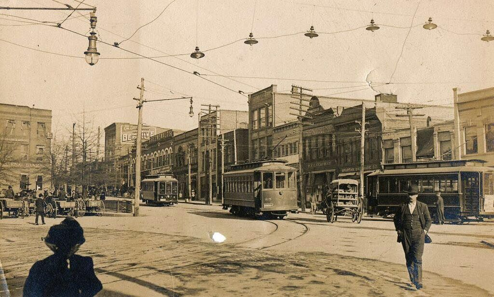

Myrtle Beach, named for its native wax myrtle trees, was inhabited by Native Americans, then developed from a timber and turpentine area into the bustling resort town it is today after a contest in 1900 named it and the construction of the Seaside Inn in 1901. It became a city in 1957 and grew rapidly after World War II, becoming a popular family vacation destination known for its beaches, golf, and attractions like the Myrtle Beach Boardwalk and Broadway at the Beach. Early History Native American Inhabitants: The first inhabitants of the area were the Waccamaw and Winyah tribes, who lived off the land and called it "Chicora," meaning "the land". European Settlement: European settlers arrived in the late 1600s, initially attempting to extend the plantation system, but the sandy soil yielded poor crops. The Withers Family: The Withers family, who arrived in the late 1700s, owned large tracts of land, and the area was once known as Long Bay or Withers. Development as a Resort Timber and Tourism Beginnings: In the late 1800s, the Burroughs & Collins Company purchased extensive beachfront land for its timber and turpentine business. The Name Game: The area was previously called Long Bay, Withers, or New Town. In 1900, a contest was held to name the community, and "Myrtle Beach" won because of the numerous wax myrtle trees growing along the shore. First Hotel: The Seaside Inn, the area's first hotel, was built by the Burroughs & Collins Company in 1901, marking the beginning of the shift to a resort destination. Official Incorporation: Myrtle Beach was incorporated in 1938 and officially became a city in 1957 when its permanent population exceeded 5,000. Mid-20th Century Growth Post-War Boom: . Following World War II, Myrtle Beach experienced rapid growth, becoming a major vacation destination with the arrival of numerous hotels, motels, and family-friendly attractions. Military Presence: . From the 1940s to the 1990s, Myrtle Beach was also home to a military base, first the U.S. Army Air Corps and later the Myrtle Beach Air Force Base, which closed in 1993. The base land was redeveloped into The Market Common, a community with shops, parks, and memorials. Broadway at the Beach: . The opening of Broadway at the Beach in 1995 expanded entertainment options with its blend of shopping, dining, and entertainment venues. Modern Myrtle Beach Continuing Evolution: Today, Myrtle Beach is a premier family resort destination with a strong golf culture and a variety of attractions, solidifying its reputation as a lively, family-friendly resort town. Cultural Heritage: The area's history also includes the rich culture of its former plantation system and its designation as an autism-friendly destination in 2018.
Below I will provide an educational timeline video